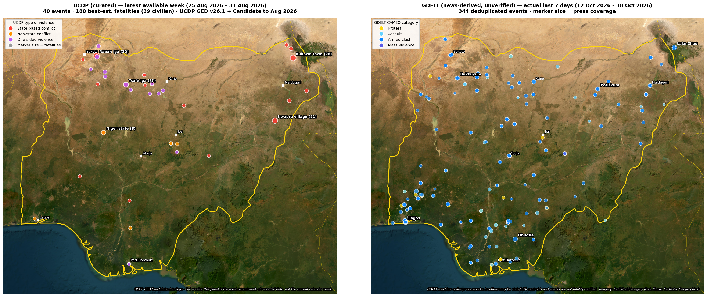

RBM GLOBAL · OPEN-SOURCE SECURITY AND HUMANITARIAN OVERVIEW
Nigeria — Weekly Threat Brief
Reporting window: 12-18 October 2026. Issue date: 19 October 2026. Published: 19 October 2026. A selected, source-based review; not an exhaustive incident census.
Overview
This review covers a reported attack on police in Abia, testimony in Niger State's custody-death inquiry, and official security statements in Borno. ICRC reporting adds evidence of pressure on selected north-eastern health facilities. These sources have different observation periods and levels of verification; they do not establish a national weekly casualty total or a countrywide security trend.
Reviewed developments
Abia: fatal attack reported at a police division
Channels reported on 17 October that an attack at Uratta Division in Aba South killed two police officers and left three receiving hospital treatment. Police Commissioner Wilfred Afolabi confirmed the casualties, and the governor visited the station. Investigation was continuing. The article does not specify the incident date clearly enough to assign it independently to this reporting window. [1]
Niger State: new testimony, unresolved death count
A Channels roundup published on 18 October describes inquiry testimony on 17 October concerning deaths in NSCDC custody. The suspended commandant acknowledged that the incident was preventable, while evidence raised questions about detention and advice to release minors. State authorities cited 37 deaths; a mortuary official described 33 bodies. The discrepancy remains unresolved. This is a development in an inquiry, not a new weekly death count or a determination of criminal responsibility. [2]
Borno: army leadership visit and official assurances
The Chief of Army Staff visited Maiduguri on 17 October and met commanders and Governor Babagana Zulum. Channels reported his assurances about restoring normalcy and supporting troops. The visit followed a presidential rescue directive announced by the defence minister on 15 October. These are official statements and policy commitments; the sources do not independently establish completed rescues or a measured improvement in civilian security. [3]
Borno: retrospective military casualty claim
A military statement reported on 12 October claimed that an air strike in Borno killed more than 40 ISWAP fighters during the preceding weekend. The exact incident date was not supplied, and further assessment was ongoing. Its publication falls within this review, but the described event predates the reporting window. The claimed toll is not independently verified and is not added to a 12-18 October casualty total. [4]
Coverage and confidence
| Zone | Selected coverage and interpretation |
|---|---|
| North East | Borno official statements and retrospective claim; ICRC facility data. No verified regional trend inferred. |
| North Central | Niger State inquiry testimony; death-count discrepancy unresolved. |
| South East | Abia police-station attack report; precise event date not established. |
| North West | No separately verified development selected. This does not establish absence of incidents. |
| South West | No separately verified development selected. This does not establish absence of incidents. |
| South South | No separately verified development selected. This does not establish absence of incidents. |
Map and data status

UCDP: dated conflict-event evidence
The current map contains 2,144 UCDP events from 1 October 2024 to 31 August 2026. Its weekly image panel covers 25-31 August: 40 events and 188 best-estimate fatalities. UCDP does not cover this brief's October reporting week.
GDELT: reporting activity through 18 October
Ingestion is complete through 18 October, with no missing daily inputs in the 24 August-18 October window. The map contains 2,958 collapsed records. Its 12-18 October image panel contains 344 records and 2,893 articles. Reporting volume is not an incident or casualty count.
Retained image and humanitarian feed
The Monday image is retained as map-2026-10-18.png, with separate UCDP and GDELT dates visible. The ReliefWeb feed contains 195 reports in a 22 July-19 October collection window; the latest publication is 16 October. These are contextual reports, not conflict-event counts.
Humanitarian context
In a release published on 16 October, the ICRC reported an 18% rise in malnutrition admissions at six supported health centres and four hospitals in north-eastern Nigeria. The comparison is January-September 2025 versus the same months in 2026: approximately 17,000 versus almost 20,000 patients. In Mubi, admissions rose from about 4,600 to 5,700 over those periods. Conflict, displacement and economic and climatic pressures affect access to food and care. These programme figures describe selected facilities and nine-month periods; they are neither national prevalence estimates nor new cases arising during this reporting week. [5]
Limitations
Source selection is limited and uneven across zones. Official claims remain attributed, duplicated reporting is not independent corroboration, and uncertain event dates are retained as uncertain. This review provides no new public-opinion sample or state sentiment estimates. Published sentiment assessment dates are unchanged. Map input coverage, event dates, reporting dates and publication dates are distinct. No national weekly casualty total is calculated.
Sources
- 1 | Channels Television | 17 October 2026: Hoodlums attack Abia police station, kill two officers
- 2 | Channels Television | 18 October 2026: Five things to know today: Niger State inquiry testimony
- 3 | Channels Television | 17 October 2026: Army chief's Borno visit and security assurances
- 4 | Channels Television | 12 October 2026: Military claim concerning a preceding-weekend Borno air strike
- 5 | ICRC | 16 October 2026: ICRC-supported health facilities see rise in malnutrition cases